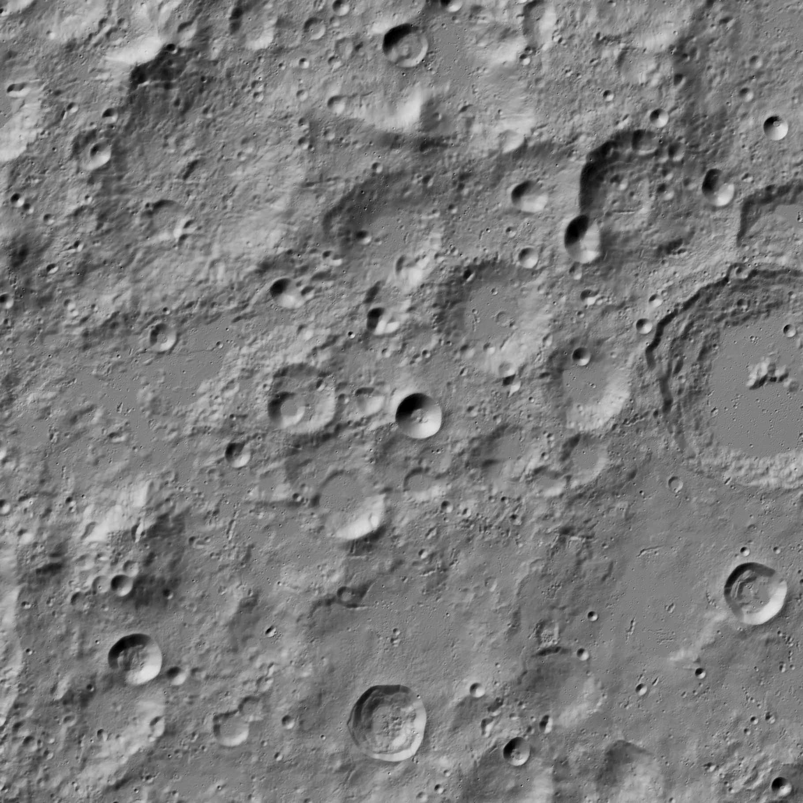

NASA Space Apps 2026 · For Moon field-test planners
Choose Moon terrain. Compare Earth candidates.
Find Earth terrain worth investigating for Moon field tests. Select a sampled square to compare its shape and limits.
145 sampled squares · 84–90°S · NASA LOLA
MOON / SOUTH POLEChoose a square

Listed-site matchNo listed-site matchSampled candidate
Loading terrain data…
Use the arrow keys to move between sampled squares. Tab moves to the Earth comparison.
Terrain comparison, not test-site approval. Two tests failed; one could not decide. See the evidence.
Comparison settings
This gives a place to investigate, not a ready test site.
The comparison narrows the terrain question. It leaves three practical questions open:
The search adds candidates for 6 unmatched Moon squares.
Inspect the full results and alternative site lists
All sampled candidates with matches
Sampled NASA test-site windows
Sites left out and why
Two tests failed. One could not decide.
We fixed the pass/fail rules before testing. The results have not established reliable site selection.
Inspect all test results and cut-off sensitivity
How to read a comparison: the Morocco example
Morocco is a closer shape match for this Moon square.
NASA LOLA (Moon) and ESA Copernicus (Earth), shown at the same 1.92 km scale with simulated shading.